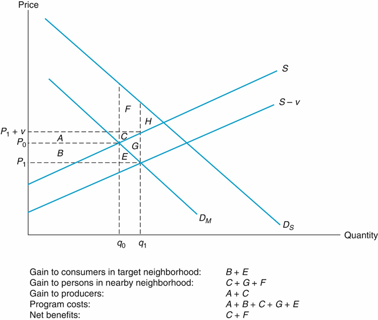

4 Valuing Impacts in Output Markets
Today’s Goals:
- Take our Econ 101 knowledge and apply it to monetizing program impacts.
- Specifically, how do we measure the social value of the output of our programs?
- And how does that depend on the private market for the good we’re producing?
- CBA of the Day
4.1 Impact Categories
Recall: goal of CBA is allocative efficiency. Maximize \(NSB = B - C\)
Social Surplus: \(SS = CS + PS + GS\)
3 categories for impacts:
- Output Markets
- Input Markets
- Secondary Markets
Knowing an impact’s category will help determine whether to include it in our CBA.
Output Markets:
- Where the intervention “takes place”
- Directly affected by program/project/policy
- Note: also includes externalities that are “missing” from output markets
Input Markets:
- Factors of production
- What you must purchase in order to enact your program
Secondary Markets:
- Anything indirectly affected by the project
Impacts still add up as before:
\(\Delta SS = \Delta SS_{O} + \Delta SS_I + \Delta SS_S\)
\(\Delta SS_O = \gamma_g\Delta R + \Delta CS_O + \Delta PS_O\)
\(\Delta SS_I = \gamma_g \Delta E + \Delta CS_I + \Delta PS_I\)
\(\Delta SS_S = \Delta CS_S + \Delta PS_S\)
Exercise 1: Categorizing Impacts
For each project, think of as many potential impacts as you can, and categorize them into (1) output, (2) input, or (3) secondary.
- MetroLink Expansion
- Full Day Kindergarten
- Smallpox Eradication
Over the next two weeks, we’ll talk about how to value impacts when market prices are observable. If that’s not the case (as for many programs involving the environment, health, and social services), then we’ll need shadow prices. More on that topic starting in Week 7.
4.2 Efficient Output Markets
To begin, suppose that our program adds supply to an area where there is already a private market.
Example: In recreation, private campgrounds exist alongside public campgrounds.
4.2.1 No Price Change
If our output is small enough that prices don’t change:

Ouput Market, No Price Effect
Exercise 2:
Is the demand curve shown above elastic or inelastic?
What happens to social surplus in this case? (Hint: \(SS = PS + CS + GS\))
What if we distribute those q’ units for free?
Let’s discuss those results. What happened?
4.2.2 Price Change
If our project is so large that prices move:

Output Market, With Price Effect
Exercise 3:
What happens to social surplus in this case? Who gains and who loses?
What if we distribute those q’ units for free? (Hint: it matters who gets the goods.)
Exercise 4:
Suppose that, instead of selling output to consumers, our project reduced costs for producers (e.g. deepening a harbor). How would we model that?
4.3 Distorted Output Markets
Now we get to the really interesting (and consequential) cases. What if there doesn’t exist an efficient private market for the good you want to provide? This is an appropriate justification for intervention.
We’ll discuss four types of market failures.
- Asymmetric information
- Externalities
- Public goods
- Addictive goods
(Boardman also has a section on monopoly power. Explore at your leisure; it may be useful if your program is intervening in a market with a single private producer.)
4.3.1 Asymmetric Information
Whenever a seller has access to information unavailable to a buyer, we say the market is characterized by asymmetric information.
Exercise 5:
What are some examples of markets with asymmetric information?
Types of asymmetric information include search costs, experience goods, and post-experience goods. Can model it by drawing two demand curves, one for uninformed consumers and another for informed consumers. When consumers are uninformed, they overpay and overbuy.

Asymmetric Information
DWL comes from the individuals between \(Q_i\) and \(Q_u\) who buy a good that they wouldn’t have bought if they were fully informed. If we can intervene, regulate, or provide information for less than the DWL, then net benefits would be positive.
4.3.2 Externalities
An externality is a cost or benefit that your actions impose on someone else.
- Can be positive or negative
- Can occur in production or consumption
- Examples: secondhand smoke, pollution from factories
- Also known as “missing markets”. No private market that sets a price on externalities. (If there were, then they wouldn’t be externalities anymore, because you could buy and sell them like normal goods.)
Exercise 6:
Think up some examples of positive and negative externalities.
NOTE: It is easy to get confused between what is an externality and what is a “secondary effect”. Secondary effects (which we discuss next week) are effects that occur in markets outside of the primary output market. Note the key word market. If the market is “missing”, then it is an externality, not a secondary effect. This will be an important distinction, because as we will learn next week, our default practice will be to ignore secondary effects. And we don’t want to ignore externalities.
Practical considerations for CBA:
- Identify the type of externality (positive or negative)
- Which side of the market
- Try to quantify it
Tax negative externalities and subsidize positive externalities (“Pigouvian tax/subsidy”). Try to set exactly at external cost.
Negative Externality in Production + Pigouvian Tax:

Externalities
The firm’s marginal cost of producing something (e.g. pollution) is \(S^*\), lower than society’s marginal cost \(S^\#\).
Note that optimal level of negative externality is not zero. It’s where \(SMC=SMB\).
The distributional implications of the Pigouvian tax look like this:

Positive Externality in Consumption + Pigouvian Subsidy:

Consumers buy too little on their own. Need to somehow shift the supply curve so they purchase \(q_1\) instead of \(q_0\) (or ideally the quantity at the intersection of \(D_S\) and \(S\); that would completely eliminate DWL).
4.3.3 Public Goods
Two characteristics of goods:
- Excludability: Can you prohibit people from using it?
- Rivalry: Does one person’s consumption diminish the its value for someone else?
| Rivalrous | Non-Rivalrous | |
|---|---|---|
| Excludable | Private Goods | Club Goods |
| Non-Excludable | Common Pool Resources | Public Goods |
Exercise 7:
Think of one good that falls in each category.
Why are public goods special cases in CBA?
- Markets typically do not exist for public goods.
- Therefore, valuing them is hard.
- And yet it’s a very common application of CBA, since government is often the only provider.
Non-rivalrous goods face the Free Rider Problem:
- No reason to pay for something if others will
- Therefore, you understate your true value; if there were a private market you would under-consume
- It’s basically an extreme version of the positive externality problem above. If I buy a public good, that doesn’t just give you some benefit; it gives you all the benefit.
- Private WTP might rationally be $0 even though societal benefits are large
Estimating the appropriate WTP values through shadow prices is a major challenge for public goods valuation. Let’s put a pin in that for a few weeks.
4.3.4 Addictive Goods
In economist-speak, addictive goods exhibit a negative intrapersonal externality. In other words, consuming them today benefits present-day-you, but at some cost to future-you. Can analyze this in a similar fashion to the asymmetric information case; draw an addicted demand curve and a recreational demand curve.
Addictive Goods
Addicted gamblers buy \(Q_A\) units, but would only buy \(Q_R\) if they weren’t addicted.
Exercise 8:
What’s the total deadweight loss from addiction?
Several studies on the social cost of addiction have used this approach – estimating demand curves for unaddicted consumers and addicted consumers and computing the deadweight loss.
Of course, some studies have taken an alternative approach:
4.4 CBA of the Day
TBD